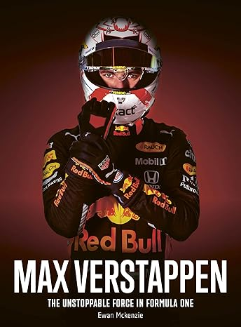

"Aqui os preços caem mais rapido que o desempenho da Ferrari"

Max Verstappen: The Unstoppable Force in Formula One
Desde seus dias no karting nas corridas juniores aos 10 anos até sua terceira conquista do campeonato mundial no final de 2023.
Max Verstappen não teve uma trajetória típica até a Fórmula 1. Seus pais também são talentos do automobilismo.Ele nasceu em Hasselt na Bélgica,filho de Sophie Kumpen,uma campeã de kart,e Jos Verstappen,ex-companheiro de equipe de Michael Schumacher na Benetton. Jos sobreviveu a um dos incidentes mais assustadores da F1 quando seu carro pegou fogo durante um pit stop.
Max quebrou todos os recordes como o piloto mais jovem após sua estreia oficial em 2015, incluindo o mais jovem a vencer uma corrida de F1, quando se transferiu da equipe júnior da Red Bull, a Toro Rosso, para a Red Bull em 2016.
Sua carreira mal completou uma década, mas ele já é o piloto de Fórmula 1 mais popular. Com habilidades incríveis na pista e uma legião de fãs holandeses, ele é uma força a ser reconhecida e o nome a ser observado nas corridas.
Essa biografia ilustrada explora sua trajetória desde o karting até o final da temporada de 2023, destacando 10 corridas-chave, incluindo sua estreia na F1, vitórias inesperadas e seus títulos mundiais.Compra InternacionalR$ 269,99